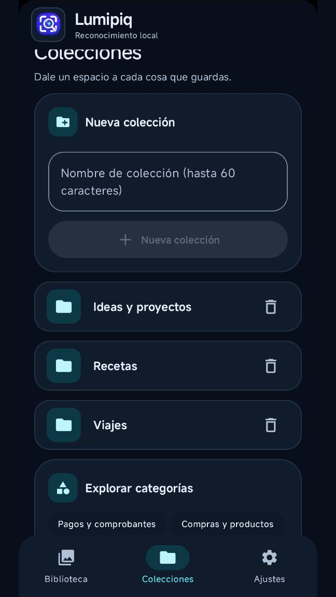
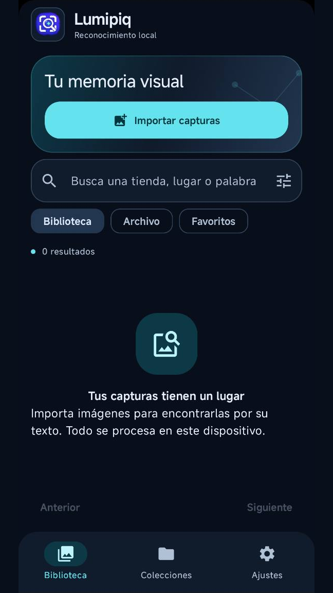

Todo empieza con una imagen.
Importa desde el selector del teléfono o comparte una imagen con Lumipiq. La app guarda una copia privada y tus originales siguen en la galería.
TU BIBLIOTECA VISUAL · ANDROID
Esa receta, una idea, la captura que necesitabas. Dale un lugar a tus imágenes y vuelve a ellas por su texto, categorías o etiquetas.
Sin cuenta Lumipiq · Reconocimiento en el teléfono
Versión gratuita con publicidad y compra única opcional de Premium.


MENOS BUSCAR. MÁS ENCONTRAR.
Una biblioteca para lo que eliges conservar. Desde una referencia de trabajo hasta la próxima receta que quieres probar.
Importa desde el selector del teléfono o comparte una imagen con Lumipiq. La app guarda una copia privada y tus originales siguen en la galería.
El reconocimiento de texto te permite buscar dentro de las imágenes. Combina la búsqueda con categorías, fechas, favoritos y etiquetas.
Crea colecciones para tus proyectos. Añade notas, corrige el texto reconocido, archiva lo que quieras y marca tus favoritos.
UN VISTAZO POR DENTRO
La misma interfaz que encontrarás en la aplicación. Elige una pantalla para verla con más detalle.
Capturas proporcionadas por el propietario. También puedes elegir tema claro o automático y utilizar la app en español o inglés.
RECONOCIMIENTO LOCAL
El OCR y el reconocimiento visual se ejecutan en el dispositivo. Tus imágenes no se suben a un servidor para analizarlas.
Leer la política de privacidad completaBloqueo con biometría o credencial del teléfono y vistas previas ocultas para imágenes seleccionadas.
Exporta y restaura copias cifradas en el destino que tú elijas. Guarda tu contraseña: no podemos recuperarla.
Los servicios de Google para reconocimiento, publicidad y compras pueden procesar datos técnicos, según se explica en la política.
BUENO SABERLO
No. Al importar, Lumipiq guarda una copia privada. Los originales de tu galería permanecen intactos. La copia ocupa espacio adicional.
La biblioteca se guarda localmente. Antes de desinstalar, exporta un respaldo cifrado si quieres conservarla y guarda su contraseña.
Puede dar resultados incompletos o incorrectos. Puedes corregir texto, categorías y etiquetas. La estimación opcional de grupos de edad aparente no identifica personas ni verifica su edad real.
La versión gratuita incluye anuncios no personalizados. Una compra única opcional de Lumipiq Premium elimina los anuncios y amplía los límites de la biblioteca y de las colecciones.
No necesitas una cuenta de Lumipiq. Google Play gestiona las compras opcionales con la cuenta de Google correspondiente.
TRANSPARENCIA PUBLICITARIA
Este archivo público identifica al vendedor autorizado de publicidad de Google para nuestras aplicaciones. Está disponible en la raíz del dominio y se comparte con las demás apps del mismo editor.
google.com, pub-7897816010423019, DIRECT, f08c47fec0942fa0Archivo de texto público · Sin inicio de sesión
¿UNA DUDA O UNA IDEA?
Para consultas sobre la app, privacidad o una compra, escríbenos indicando el modelo de tu teléfono y la versión instalada.